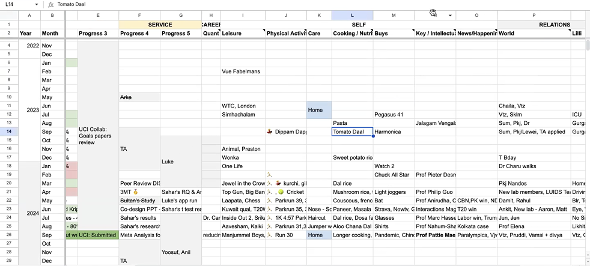
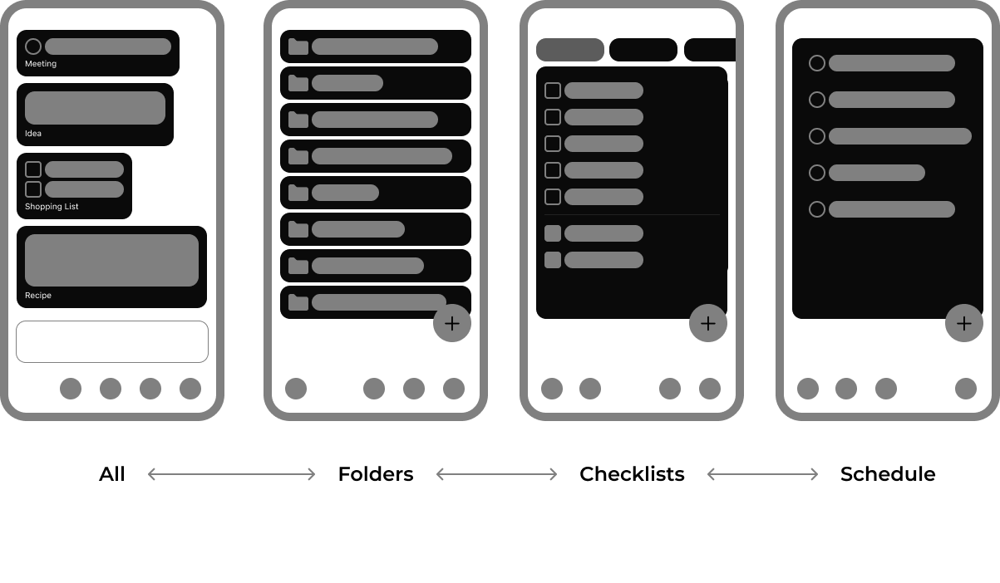
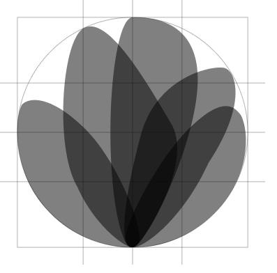

AI-powered notes app that makes staying organized feel effortless.
Ficus Notes
Managing notes often means endless folders, tags, and manual sorting. To solve this, a notes app was designed and launched that leverages AI to auto-categorise notes into folders, lists, and schedules helping users stay organised without the extra effort.
With built-in intelligence, the app adapts to personal workflows, ensuring notes are always structured, searchable, and actionable.
Product Website - ficusnotes.com | App Store
Overview
iOS - available
macOS - in development
Timeline
Mar-Sep 2025
Tools
Figma, Xcode, ChatGPT
Role
Solo project
Discover
Friction erodes intrinsic motivation
During a user interview for a project, the participant shared their screen to demonstrate their workflow. At one point, they needed to reference a book and opened their chat to self and searched there. When asked how they usually manage their "to-be-read" list, they explained it was spread across different places a notes app, Google Keep, occasionally Goodreads, and often WhatsApp.
This fragmentation isn't inefficiency—it's an adaptive response. Users rarely abandon tools because they lack features; they abandon them when the cognitive cost of maintaining structure exceeds the motivational reward. According to Self-Determination Theory, sustained engagement requires autonomy, competence, and low cognitive friction.
This observation prompted an inquiry into how motivational friction shapes note-taking behavior.
Using chat to self for shopping list
Fragmentation reflects autonomy; convenience preserves self-efficacy
Research
Survey (N=48)
An online survey was conducted to understand how people capture ideas, manage lists, and take notes across different contexts. The findings validated the widespread nature of fragmentation and convenience-seeking behaviors.
Long Notes/Laptop
Notion
Obsidian
Short Notes/Mobile
Apple Notes
Ease of data entry is inversely proportional to ease of data retrieval.
Interviews (N=8): Adaptive Behavior Under Friction
Users develop elaborate systems for tracking work and hobbies—from dedicated apps to Google Sheets—but struggle to sustain them. This abandonment reflects competence fatigue: when organizing becomes a chore rather than an extension of thought, intrinsic motivation declines.
Interviews revealed a clear pattern: the more complex the system, the harder it was to maintain. People consistently defaulted to tools like WhatsApp—not out of laziness, but as a strategy to preserve autonomy and minimize cognitive friction.

Personal tracking system in Google Sheets
Semi-structured interviews revealed four recurring patterns of motivational friction in note-taking practices. The table below maps each theme to the motivational needs it affects.
| Theme | Motivational Need Affected | Description of Friction | Example Quote |
|---|---|---|---|
| Competence Fatigue: The Burden of Maintenance | Competence | Ongoing upkeep erodes sense of mastery | "Don't use it if you actually want to get work done." |
| Fragmentation as a Reflection of Autonomy | Autonomy | Multiple tools used to preserve control and flexibility | "Everything goes to my WhatsApp self-chat." |
| Convenience as a Motivational Driver | Autonomy, Competence | Quick capture reduces cognitive friction, supports self-efficacy | "It's faster to just message myself than open another app." |
| The Paradox of Structure and Retrieval | Competence vs. Autonomy | Structured systems help retrieval but reduce spontaneity | "Ease of entry is inversely proportional to ease of retrieval." |
Motivational Friction Framework
Structural Friction
Overly rigid organizational schemas that constrain user workflow
Cognitive Friction
The mental burden of remembering how one's system works
Temporal Friction
Maintenance work that competes with actual productive tasks
Sustained engagement occurs when systems reduce cognitive effort while preserving user control
Solving
Principles followed
Capture should be effortless
Notes must be as easy to jot down as sending a message.
Retrieval should feel natural
Finding notes should work intuitively, without learning complex structures.
Support both quick and structured use
A single system should serve casual reminders and organized knowledge alike.
Reduce maintenance overhead
Systems shouldn't feel like a chore to keep up with.
Navigation

Branding
Greyscale theme is followed to mimic blank page and black ink.
Each leaf/petal is out of a blob. A blob, random shape, combines to make a flower in a circular grid. Making a pattern in chaos.

Development
Technical Implementation
Built a SwiftUI-based notes interface optimized for speed using Swiftdata.
Implemented AI-driven auto-categorization with GPT-4.0 service to reduce manual organization.
Created a scalable architecture to support future features like search, tagging, and cross-device sync.
Testing (N=20)
Beta testing by sharing the build through Testflight platform.
Feedback related to new requirements were documented to be taken up in future releases.
• Schedule Tab - Hard to check time for a task
• Schedule - in the first tab it should be sorted according to date created, not the date of schedule